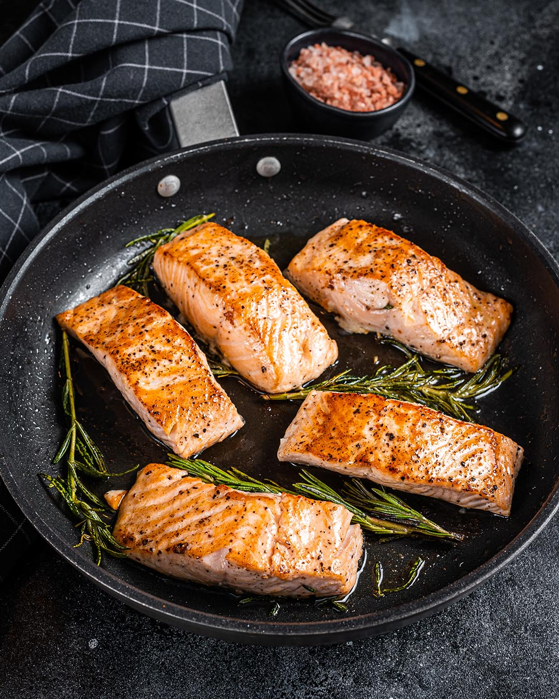
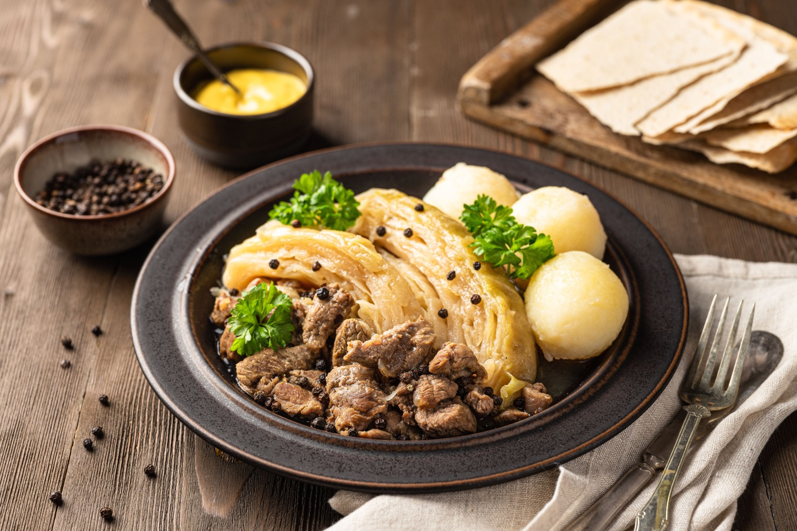
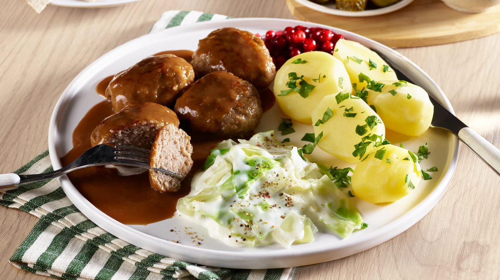
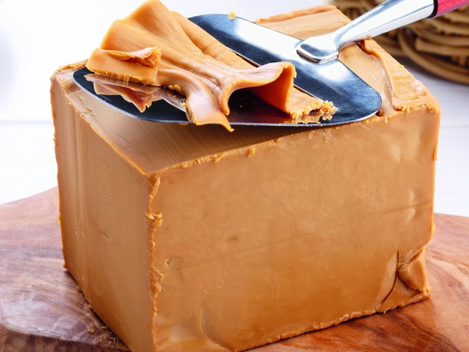

Norwegian Food
Discover traditional Norwegian dishes and local favourites.

Norwegian Salmon
Norwegian Salmon is one of the most famous foods in Norway and is enjoyed by people around the world. Raised in the clean and cold waters of Norway, the salmon is known for its fresh taste, rich flavor, and high nutritional value. It is often served grilled, smoked, or as part of traditional seafood dishes. Visitors to Norway should not miss the opportunity to taste authentic Norwegian salmon prepared by local chefs.

Fårikål
Fårikål is considered the national dish of Norway. It is a traditional meal made with lamb, cabbage, black pepper, and simple seasonings. The dish is slowly cooked for several hours, creating a rich and comforting flavor. Norwegians especially enjoy Fårikål during the autumn season. It represents the country's culinary traditions and remains one of the most loved homemade dishes across Norway.

Kjøttkaker
Kjøttkaker are traditional Norwegian meatballs made from ground beef and spices. They are usually served with potatoes, gravy, peas, and lingonberry sauce. This dish is a favorite comfort food among Norwegian families and is commonly enjoyed during family dinners and special occasions.

Brunost
Brunost, also known as brown cheese, is one of Norway's most unique foods. It has a sweet caramel-like flavor and is often eaten on bread, waffles, or crackers. Brunost is a symbol of Norwegian food culture and is loved by both locals and tourists.
Lefse
Lefse is a soft traditional flatbread made from potatoes, flour, and butter. It is commonly served with sugar, cinnamon, or jam. This popular Norwegian treat is often enjoyed during holidays and family gatherings.